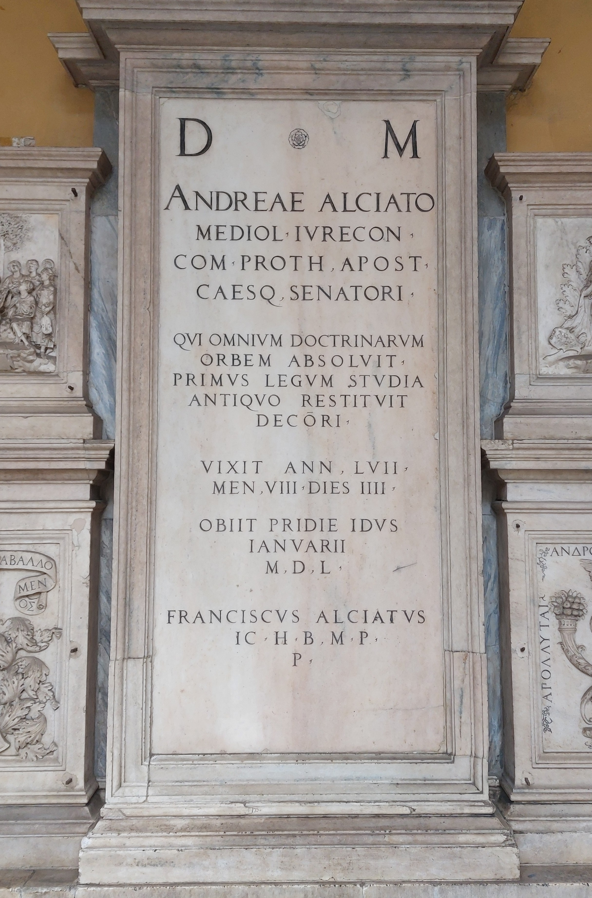

Ruolo: Giureconsulto (1492–1550)

"Agli Dei Mani. Ad Andrea Alciato, giureconsulto milanese, conte, protonotario apostolico e senatore imperiale, che portò a termine il ciclo di tutte le dottrine, per primo restituì agli studi delle leggi l'antico decoro. Visse 57 anni, 8 mesi e 4 giorni. Morì il giorno prima delle Idi di gennaio del 1550. Francesco Alciato, erede, pose qui (questa lapide) al benemerito e devoto."
" To the Manes Gods. To Andrea Alciato, Milanese jurist, count, apostolic protonotary and imperial senator, who completed the cycle of all the disciplines and was the first to restore the ancient dignity to the study of law. He lived 57 years, 8 months and 4 days. He died on the day before the Ides of January in 1550. Francesco Alciato, heir, placed (this headstone) here for the most blessed and devout."